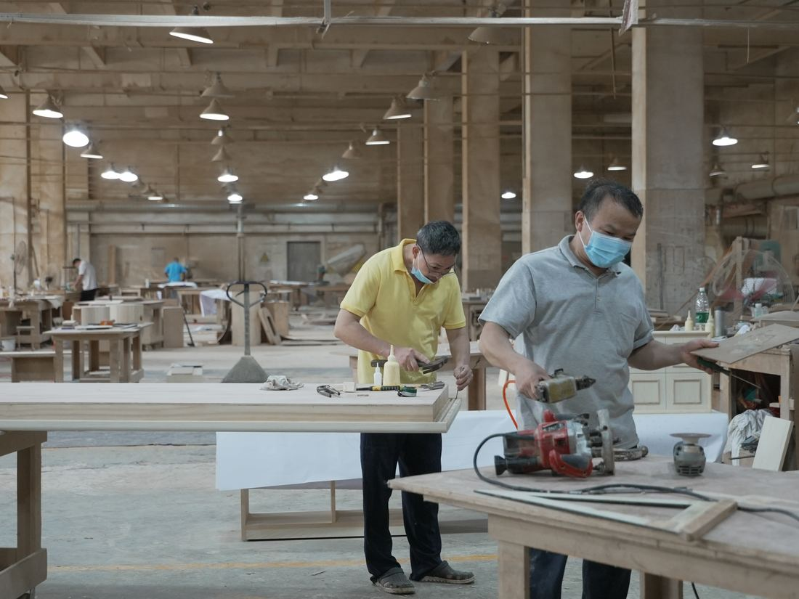
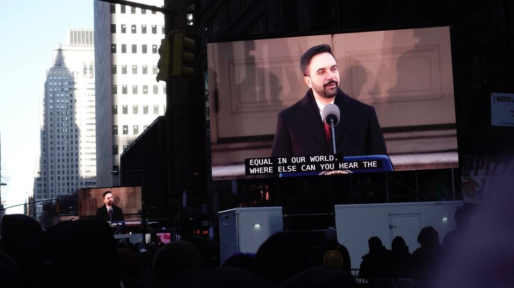
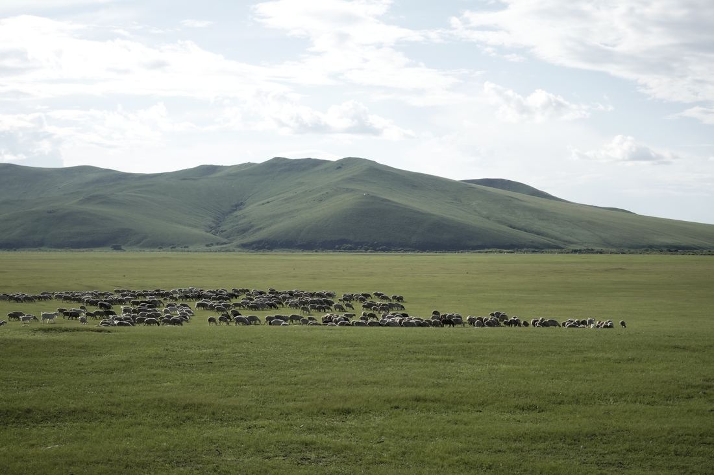
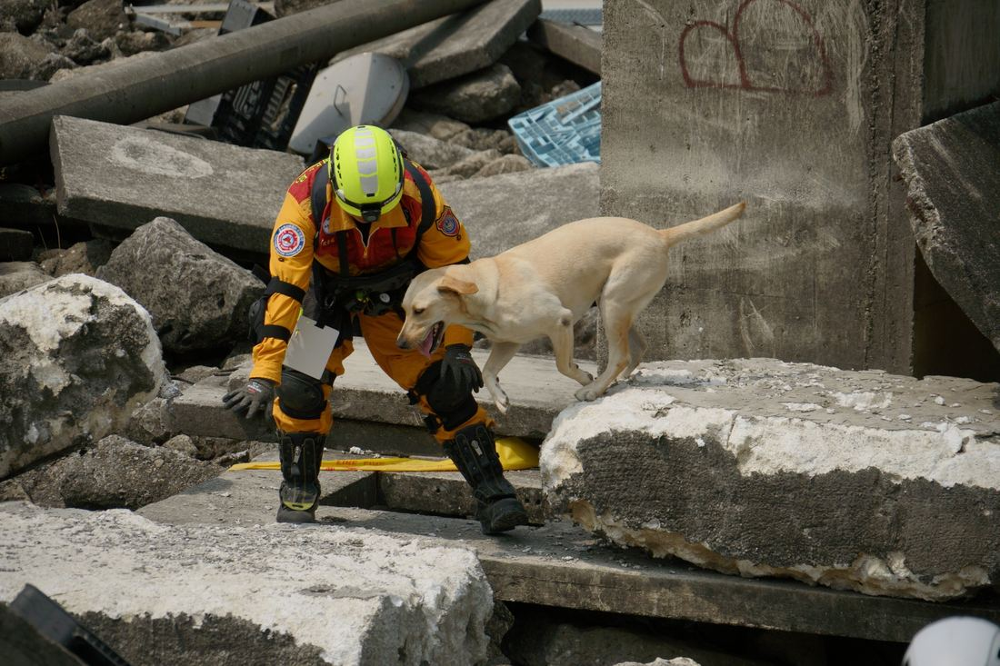
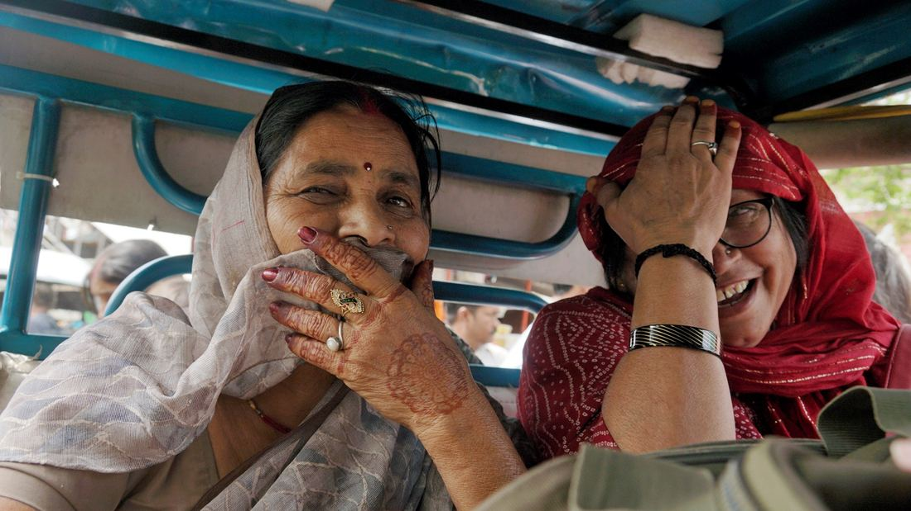

Photography
Five series, photographed between 2024 and 2026. Click a thumbnail to view.

01Made in China
中國製造 Guangdong, China · 2026.07 · 12 photos
02Inauguration
就職 New York, USA · 2026.01 · 11 photos
03Grazing Land
放牧地 Inner Mongolia, China · 2025.08 · 11 photos
04Paws on the Rubble
碎石上的腳掌 Taiwan · 2024.04–05 · 11 photos
05